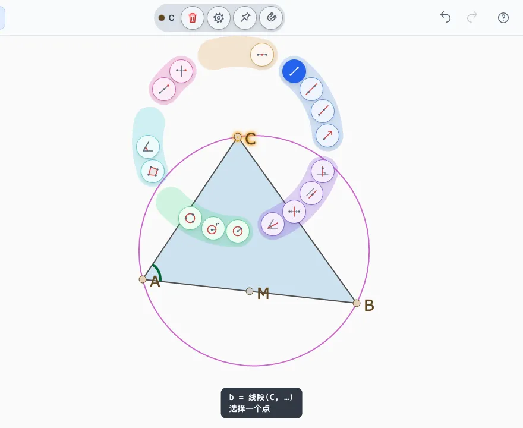

用手势作图
点按图形
| 点按位置 | 结果 |
|---|---|
| 空白处 | 自由点（3D 中位于地面 z = 0 上） |
| 交叉处附近 | 两个对象的交点，悬停时两者会高亮（距离小于 24 px） |
| 一个对象 | 选中该对象并打开其工具环 |
| 空白处（工具环已打开） | 关闭工具环，不创建点 |
| 一个对象（工具面板已打开） | 选中该对象，不打开工具环：工具面板显示其工具 |
文本、表达式或滑动条只会被选中：它们没有工具环。
工具环

工具环只显示适用于所点按对象的工具。每个工具的位置始终不变；不适用的工具会留下空位。工具族从上方开始按顺时针排列：
| 工具族 | 工具 |
|---|---|
| 点 | 对象上的点、交点、中点或圆心 |
| 直线 | 线段、直线、射线、向量 |
| 作图 | 垂线、平行线、中垂线、角平分线 |
| 圆 | 圆心和点、圆心和半径、三点、球（3D） |
| 多边形、角、轨迹 | 多边形、角、轨迹 |
| 变换 | 中心对称和轴对称，作用于点或对象（多边形、圆……） |
悬停在工具上时，提示会显示它将写出的行和所需的参数：b = 线段(C, …)，“选择一个点”。对对象本身的操作（删除、设置…）在操作栏的上下文区中。
选择参数
选定工具后，对象的预览会跟随指针，可接受的对象在悬停时高亮。在需要点的位置，可以任选一个已有的点、一个对象（创建对象上的点）、一个交叉处（创建交点）或空白处（创建自由点）。
- 多边形：依次选顶点，最后再选第一个顶点。拖动顶点均为自由点的多边形会整体平移，除非它已固定（属性中的固定对象）。
- 圆（圆心和半径）：单击即可创建，半径约 150 px，取两位有效数字；拖动圆可改变半径。
- 轨迹：在依赖于对象上的点的点上提供；单击即可创建。
- 角和角平分线：第一条边上的一点、顶点、第二条边上的一点。
特殊情况
- 重叠的对象：会出现一个菜单，列出每个对象的行；悬停时对应对象高亮。点总是优先，交叉处直接给出交点。
- 用手指：使用工具时，按住的手指只显示预览而不移动任何东西，抬起时才选中。可以按住图标，一次滑动到目标。
- 窗口边缘：工具环会移位以完整显示，并用虚线与对象相连；图形移动时它会跟随对象。
- 放弃：Esc或提示中的✕。
- 移动：使用工具时，拖动用于瞄准；右键总是移动对象和视图。